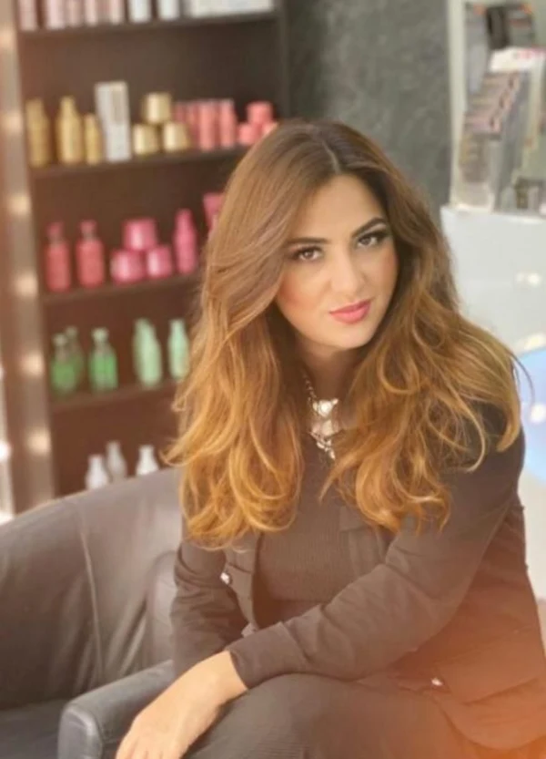

Seit zwanzig Jahren stehe ich selbst am Stuhl.
Farbe, Schnitt, Hochsteckfrisuren, Brautstyling. Kein Filialleiter, keine wechselnden Aushilfen — wer hier einen Termin bekommt, weiß auch, wer ihn macht.
Vor jeder Farbe sehe ich mir die Kopfhaut an. Steht das Ergebnis fest, steht auch der Preis fest — und was am Probetermin steht, steht am Hochzeitstag.
Fakhria Tokhi, Friseurmeisterin
Was hier gemacht wird
Beratung ist bei jedem Termin dabei, bei Farbe kommt die Kopfhautanalyse dazu. Der Farbfleck neben dem Preis stammt aus keinem Katalog — er ist aus dem Foto genau dieser Arbeit gemessen.

Farbe & Strähnen
Farbe, Tönung, Foliensträhnen und Balayage. Ammoniakfrei für alle, die empfindlich reagieren.
ab 43 € gemessen an dieser Arbeit
Schnitt & Pflege
Waschen, Schneiden, Föhnen — und was das Haar danach wieder in Form hält, von Olaplex bis Keratin.
ab 30 € gemessen an dieser Arbeit
Brautstyling
Haar und Make-up macht dieselbe Person, an einem Termin, im selben Raum. Mit Probetermin.
390–600 € gemessen an dieser ArbeitAlle Preise richten sich nach Haarlänge und Aufwand. Zur vollständigen Preisliste
Arbeiten aus dem Salon
Aufnahmen aus dem Alltag in der Perlacher Straße, gemacht, während die Kundin noch auf dem Stuhl saß. Nichts davon ist nachgestellt, und nichts ist beschnitten — jedes Bild steht so, wie es aufgenommen wurde.
Brautstyling
Haar und Make-up mache ich selbst, an einem Termin, im selben Raum. Kein Hochzeitsmorgen mit drei Terminen an drei Orten. Vorher gibt es einen Probetermin: Was dort steht, steht am Hochzeitstag.
390–600 € Hairstyling und Braut-Make-up zusammen
Wer hier schneidet
Ich heiße Fakhria Tokhi, im Laden nennen mich alle Bahar. Den Meisterbrief habe ich von der Handwerkskammer für München und Oberbayern; der Salon in der Perlacher Straße gehört mir.
Bevor die Schere kommt, reden wir. Bei jeder Farbe sehe ich mir vorher die Kopfhaut an — was danach passiert, hängt davon ab, was das Haar verträgt, nicht davon, was gerade läuft. Steht das Ergebnis fest, steht auch der Preis fest.
Augenbrauen mache ich in Fadentechnik, ohne Wachs und ohne Pinzette. Nebenan ist das Kosmetikstudio dazugekommen.

Perlacher Straße 2
- Öffnungszeiten
-
- Montag 10:00 – 16:00
- Dienstag bis Freitag 09:00 – 19:00
- Samstag 09:00 – 16:00
- Sonntag geschlossen
- Anschrift
-
BaHaar’s Styling Studio
Perlacher Straße 2
81539 München-Giesing